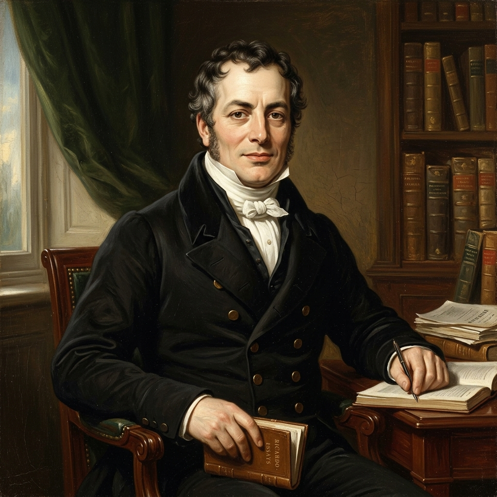
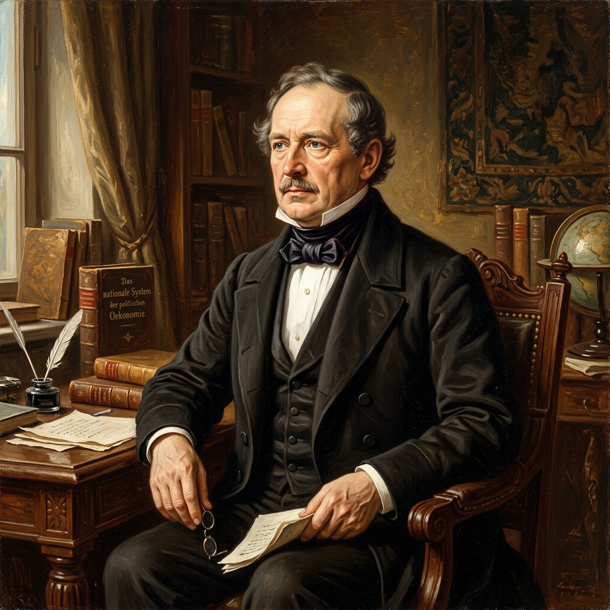

세계화 경제 속 무역은 어떤 방향으로 나아가야 할까?
시장 개방과 자원 효율성을 추구하는 '자유 무역'과, 자국 산업 보전과 경제 안보를 내세우는 '보호 무역'의 긴장을 탐구합시다.
📖 학습 안내 및 활동 방법
- 1단계: 상단 메뉴를 통해 자유 무역, 보호 무역, 종합 비교표 탭을 차례로 학습합니다.
- 2단계: 본문의 빈칸 입력 필드를 클릭한 뒤, 알맞은 경제 용어를 키보드로 직접 타이핑하여 채웁니다.
- 3단계: 입력 상자에 마우스를 대면 흐릿하게 제공되는 초성 자음 힌트 및 하단 단어 바구니 단어 목록을 참고할 수 있습니다.
- 4단계: 에세이를 작성하고 자가 배움 테스트를 마친 뒤, 상단의 **[인쇄]** 버튼을 눌러 인쇄용 양식(A4 크기)으로 출력합니다.
자유 무역 정책
국가의 규제나 인위적 장벽을 제거하고 시장원리와 비교우위 특화에 근거한 글로벌 자유거래를 지향
보호 무역 정책
국가 안보, 유치산업 보호, 국내 고용 보호를 위해 관세율 조정 및 수입 제한 등의 개입 조절 추구
🌐 고등학교 경제: 02. 무역 원리와 무역 정책 (자유 무역 활동지)
학년: ____ 반: ____ 번호: ____ 이름: _________
📈 자유 무역: 간섭 없는 시장 거래와 글로벌 경제 후생 증대
자유 무역 정책의 개념 개념
자유 무역의 정의
국가의 인위적 간섭을 하고 시장 경제 원리에 따라 대외 거래를 추구하는 정책을 뜻함.
지향점
국가 간 관세 등 장벽을 허물어 자원을 효율적으로 배분하고 전 세계적 소비량을 늘리는 데 목적을 둠.
자유 무역의 긍정적 측면 효과
1
비교 우위 특화 생산으로 소비 재화의 이 늘어납니다.
2
상대적으로 더 으로 생산된 상품을 값싸게 소비합니다.
3
수출 기업 생산 증가 및 확대로 경제 성장을 견인합니다.
4
국경을 넘는 외산과의 무한 경쟁 속 국내 을 유도합니다.
자유 무역의 문제점과 한계 부작용
개도국이 저부가가치 1차 산업에 고착화되어 선진국 위주의 독점 우려 발생.
글로벌 경쟁력 우위를 선점하지 못한 취약 자국 기업들의 도태 및 이로 인한 증가 리스크.
글로벌 밀접도 심화로 국가 간 가 과하게 상승해 대외 쇼크 전이가 빨라짐.
고전 경제학 사상가들의 관점 인물 매칭 💡 아바타를 클릭하면 상세 학습창이 활성화됩니다.
아담 스미스
국가별 무역 장벽 규제는 자원을 엉뚱하게 배치해 국부를 저해합니다. '보이지 않는 손'인 시장 원리를 바탕으로 국가 규제를 완전 차단하는 완전무역을 주장하며 절대 우위론을 주창했습니다.

데이비드 리카도
절대적으로 유리한 품목이 없더라도, 상대적인 기회비용이 더 적은 제품에 특화 생산하는 비교 우위론을 내세워, 국가 간 교역이 당사국 모두에게 윈-윈(Win-Win)이 됨을 과학적으로 규명했습니다.
📖 교과서 182쪽 탐구: 자유 무역이 수입국에 미치는 효과 탐구
[탐구 과제] 다음 자료를 분석하여 빈칸을 채우고 무역의 효과를 알아봅시다.
그래프는 갑국의 X재 시장을 나타낸다. 갑국은 3달러의 가격 수준에서 X재를 원하는 만큼 수입할 수 있다. (국제 가격 = 3달러)
그래프는 갑국의 X재 시장을 나타낸다. 갑국은 3달러의 가격 수준에서 X재를 원하는 만큼 수입할 수 있다. (국제 가격 = 3달러)
📍 [문항 1] 교역 전 국내 잉여 분석 (가)
교역 전 국내 균형 가격은 달러이며, 이때의 국내 균형 거래량은 5만 개입니다.
소비자 잉여는 만 달러, 생산자 잉여는 만 달러이므로, 이 나라의 사회적 총잉여는 만 달러가 됩니다.
소비자 잉여는 만 달러, 생산자 잉여는 만 달러이므로, 이 나라의 사회적 총잉여는 만 달러가 됩니다.
📍 [문항 2] 교역 후 국내 잉여 분석 (나)
국제 가격인 달러 수준에서 무역이 시작되면, 이 나라의 국내 가격도 달러로 하락합니다.
이 가격에서 국내 공급량은 만 개이고, 국내 수요량은 만 개가 됩니다.
따라서 부족분인 만 개를 외국에서 수입해옵니다.
이때 소비자 잉여는 만 달러로 크게 증가하는 반면, 생산자 잉여는 만 달러로 감소합니다. 그 결과 사회적 총잉여는 만 달러가 됩니다.
이때 소비자 잉여는 만 달러로 크게 증가하는 반면, 생산자 잉여는 만 달러로 감소합니다. 그 결과 사회적 총잉여는 만 달러가 됩니다.
📍 [문항 3] 수입국에 미치는 경제적 효과 종합
교역 결과 소비자 잉여는 하고 생산자 잉여는 하지만, 전체 총잉여는 교역 전보다 만 달러 하였습니다.
이처럼 소비자의 이득이 생산자의 손실보다 크므로, 자유 무역은 수입국 전체적으로 사회적 효율성을 높인다고 설명할 수 있습니다.
이처럼 소비자의 이득이 생산자의 손실보다 크므로, 자유 무역은 수입국 전체적으로 사회적 효율성을 높인다고 설명할 수 있습니다.
📉 [가] 교역 전 (국내 균형)
📈 [나] 교역 후 (수입 개시)
🏷️ 단어 바구니
🌐 고등학교 경제: 02. 무역 원리와 무역 정책 (보호 무역 활동지)
학년: ____ 반: ____ 번호: ____ 이름: _________
🛡️ 보호 무역: 유치산업 육성 및 자국 노동자·국민 경제의 안보
보호 무역 정책의 개념 개념
보호 무역의 정의
국가 안보와 국내 산업의 방어 육성을 목표로, 국가가 상품의 수출입에 으로 개입하고 무역 규모와 유입 장벽을 의도적으로 조정하는 정책입니다.
역사적 발생 배경
18~19세기 영국의 압도적인 산업 독점(자유무역) 속에서, 미국·독일 등 후발 주자들이 자국 제조업의 붕괴(자유무역의 부작용)를 막고 경제적 자립을 도모하고자 국가 차원의 보호관세 장벽을 도입하면서 탄생했습니다.
보호 무역을 펼치는 이유 명분
유치산업의 육성
앞으로 경제성장 발전 동력이 될 잠재력은 크나 아직 해외 거대 기업들과 경쟁하기엔 초기 산업의 안전망이 됨.
국내 고용의 보전
저렴한 외산의 폭발적인 국내 점유율 확대로 발생할 수 있는 국내 자국 기업들의 와 심각한 고용 불안을 예방함.
국가 생존 안보
군사적 충돌 및 외교 단절 시 국가 핵심 생존 자원인 이나 방위 산업 자급 능력 확보의 기초가 됨.
보호 무역을 위한 주요 규제 및 정책 수단 수단
| 정책 수단 구분 | 핵심 메커니즘 및 상세 설명 |
|---|---|
| 관세 장벽 | 수입품 통관 시 일정한 비율의 높은 (관세)을 부과하여, 국내 자국 제품과의 가격 우위를 조정하는 수단. |
| 비관세: 수입 할당제 | 특정 품목의 연간 최대 수입 허용 한도를 직접 설정하여 총량을 통제하는 정책. |
| 비관세: 수출 보조금 | 자국 제품을 수출하는 현지 기업에 현금성 재정 조달을 돕는 을 줌으로써 유통 우위를 강화함. |
| 비관세: 국내 보조금 | 국내 생산 기업에게 재정적 혜택인 을 지급하여 생산비를 낮추고 가격 경쟁력을 키우는 정책. |
| 비관세: 기술 장벽 (TBT) | 엄격한 제품 위생 검역, 규격 기준, 환경 평가 등을 통해 수입을 깐깐하게 막는 조치. |
보호 무역 사상가의 관점 인물 매칭
알렉산더 해밀턴
신생 독립국인 미국이 영국의 대량 저가 공업 제품에 대책 없이 개방한다면 영원히 영국의 경제적 식민지에 머물 것입니다. 건국 초기 제조업을 지켜내기 위해 국가가 높은 보호장벽을 쳐주어야 한다는 유치산업 보호론을 최초로 주창했습니다.

프리드리히 리스트
영국 중심의 고전 경제학은 선진 강대국의 기득권 유지 논리일 뿐입니다. 국가 경쟁력이 차이 나는 상황에서의 전면 자유무역은 불합리합니다. 자국 산업 보호 기반의 유치산업 보호론을 체계적으로 설파하며 보호관세를 적극 옹호했습니다.
📖 실전 문제 탐구: 관세 부과(보호 무역)가 수입국에 미치는 효과 탐구
[탐구 과제] 다음 자료를 분석하여 빈칸을 채우고 관세 부과의 효과를 알아봅시다.
그래프는 갑국의 X재 시장을 나타낸다. 갑국은 1달러의 국제 가격 수준에서 X재 자유 무역에 참여하고 있었다. 갑국 정부는 생산자를 보호하기 위해 t+1기에 X재 수입 1개당 1달러의 관세를 부과하였다. (국제 가격 = 1달러, 관세 = 1달러)
그래프는 갑국의 X재 시장을 나타낸다. 갑국은 1달러의 국제 가격 수준에서 X재 자유 무역에 참여하고 있었다. 갑국 정부는 생산자를 보호하기 위해 t+1기에 X재 수입 1개당 1달러의 관세를 부과하였다. (국제 가격 = 1달러, 관세 = 1달러)
📍 [문항 1] 관세 부과 전 (자유 무역 상태 - t기) 분석
자유 무역 상태의 국내 가격은 달러이며, 국내 생산량은 만 개, 국내 소비량은 만 개입니다.
따라서 부족분인 만 개를 수입합니다.
이때 소비자 잉여는 만 달러, 생산자 잉여는 만 달러이며, 사회적 총잉여는 만 달러가 됩니다.
따라서 부족분인 만 개를 수입합니다.
이때 소비자 잉여는 만 달러, 생산자 잉여는 만 달러이며, 사회적 총잉여는 만 달러가 됩니다.
📍 [문항 2] 관세 부과 후 (보호 무역 상태 - t+1기) 분석
관세 부과 후 국내 가격은 달러로 상승하고, 국내 생산량은 만 개로 증가하나, 국내 소비량은 만 개로 감소합니다. 수입량은 만 개로 감소합니다.
이때 소비자 잉여는 만 달러로 감소하고, 생산자 잉여는 만 달러로 증가합니다. 정부의 관세 수입은 만 달러이며, 사회적 총잉여는 만 달러가 됩니다.
이때 소비자 잉여는 만 달러로 감소하고, 생산자 잉여는 만 달러로 증가합니다. 정부의 관세 수입은 만 달러이며, 사회적 총잉여는 만 달러가 됩니다.
📍 [문항 3] 관세 부과에 따른 경제적 효과 종합
관세 부과로 소비자 잉여는 하고 생산자 잉여는 하며, 정부 관세 수입은 만 달러 발생합니다.
그러나 사회적 총잉여는 전체적으로 만 달러 감소하며, 이 감소분이 보호무역(관세 정책)으로 인한 사회적 순손실(자원 배분의 왜곡)에 해당합니다.
그러나 사회적 총잉여는 전체적으로 만 달러 감소하며, 이 감소분이 보호무역(관세 정책)으로 인한 사회적 순손실(자원 배분의 왜곡)에 해당합니다.
📉 [가] 관세 부과 전 (자유 무역 상태 - t기)
🛡️ [나] 관세 부과 후 (보호 무역 상태 - t+1기)
🏷️ 단어 바구니
🌐 고등학교 경제: 02. 무역 원리와 무역 정책 (종합 비교표)
학년: ____ 반: ____ 번호: ____ 이름: _________
📊 자유 무역과 보호 무역의 요인 및 핵심 특징 종합 비교
| 구분 기준 | 자유 무역 정책 | 보호 무역 정책 |
|---|---|---|
| 기본 방향성 | 국가의 인위적 개입 규제 완전 배제 | 국가의 대외 교역 직간접적 개입 및 정비 |
| 국가 개입 수위 | 국가의 시장 간섭 | 국가의 수출입 적 개입 |
| 주요 정책적 수단 | 관세 인하, FTA 협정 및 수입 규제 제거 | 관세 인상, 및 보조금 지급 등 비관세 조치 |
| 대표 사상가 | 아담 스미스, 데이비드 리카도 | 프리드리히 리스트, 알렉산더 해밀턴 |
| 긍정적 의의 | 특화에 근거한 경제적 효율성 상승 및 전세계 소비 가능 조합의 확대 | 아직 경쟁력이 유치산업을 육성하고 국내 실업 안정화 기여 |
| 발생 가능한 한계 | 선진국 위주의 고착화, 국내 취약 산업 위축 및 초래 | 유통가 상승으로 자국 소비자 부담 증가, 국내 산업 안주 및 경쟁국 보복 조치 우려 |
🏷️ 단어 바구니
🌐 고등학교 경제: 무역 원리와 무역 정책 (종합 토론 수행 활동지)
학년: ____ 반: ____ 번호: ____ 이름: _________
✍️ Today's Mission: 나의 생각 정리 및 자가 진단
Q1
자유 무역은 비교 우위에 따른 효율적 자원 배분과 소비자 후생 증가라는 순기능을 가지지만, 국내 특정 산업의 위축, 구조적 실업 유발, 소득 양극화 등의 부작용을 낳기도 합니다. 자유 무역이 초래하는 주요 부작용과 이를 해결하기 위한 정책적 방안에 대해 서술해 봅시다.
Q2